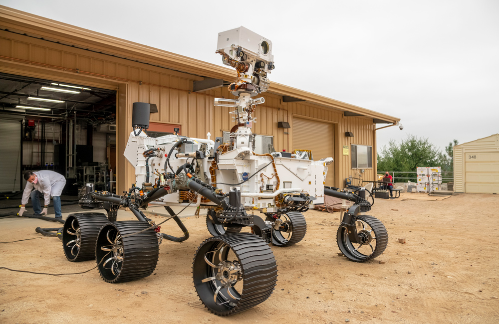
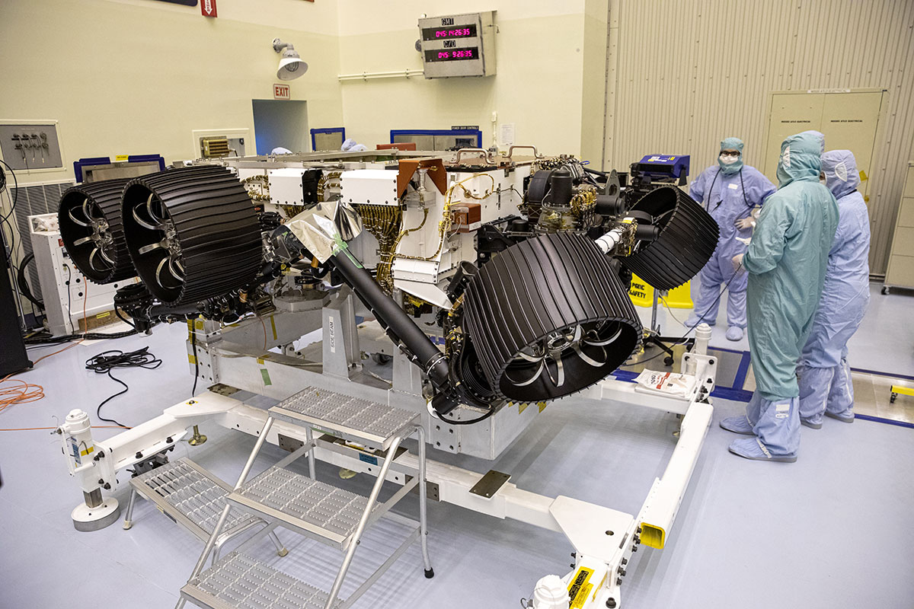
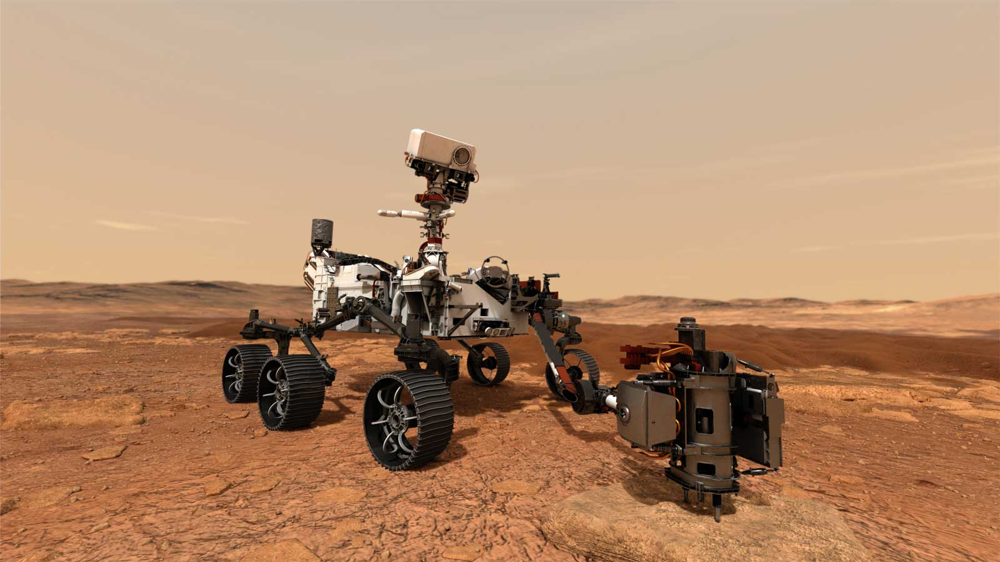

LIGHT AND HEAVY WEIGHT HAMMER
Mars 2020 Perseverance Rover Mission
Description
The Mars 2020 Perseverance Rover will search for signs of ancient microbial life, which will advance NASA's quest to explore the past habitability of Mars. The rover has a drill to collect core samples of Martian rock and soil, then store them in sealed tubes for pickup by a future mission that would ferry them back to Earth for detailed analysis. Perseverance will also test technologies to help pave the way for future human exploration of Mars.
Physical Attributes
-
Weight
1,025 kilograms
-
Dimensions
3 meters long
2.7 meters wide
2.2 meters tall -
Materials
Multiple - Please Check References
-
Manufacturer
NASA, Jet Propulsion Laboratory
Images
-

Perseverance Twin Drives Into the Mars Yard
(NASA/JPL-Caltech) -

Perseverance in Progress
(NASA/Kim Shiflett) -

Mars 2020 Collecting Sample (Artist's Concept)
(NASA/JPL-Caltech)